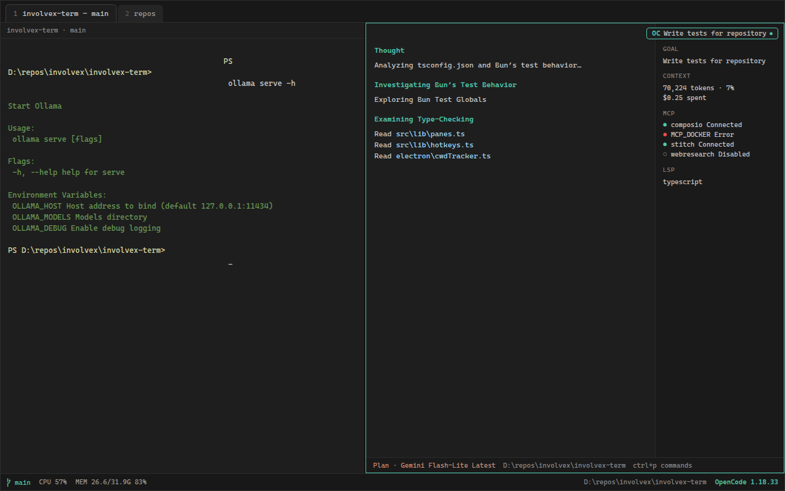
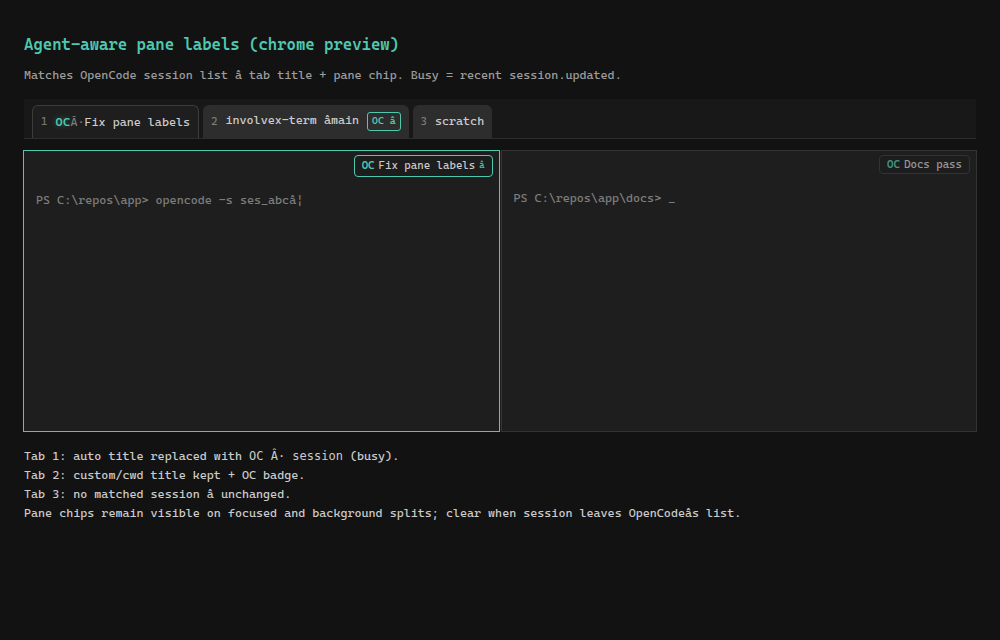

involvex-term
Minimalist dark Git-aware terminal: Electron + TypeScript + Bun + xterm.js + node-pty — with OpenCode and agent CLI hooks in the pane.

Features
- xterm.js dark theme (
#1e1e1e / #cccccc) - Tabs, split panes, and Windows Terminal–style copy/paste
- Footer Git status + branch menu; CPU / MEM widgets
- OpenCode launch and session continue from the UI
- Agent-aware pane labels (OpenCode session title on tabs/panes)
-
Optional agent env hooks (
INVOLVEX_TERM_*) for AI CLIs - Shell profiles: pwsh, Windows PowerShell, cmd, WSL
- Releases: Windows Setup + Portable.exe, Linux AppImage (auto-update for Setup/AppImage)
- Settings at
~/.involvex-term/settings.json
Agent integration
Keep your shell and your agent in the same window — no in-app chat, just pane chrome and optional env context for any agent CLI.
-
OpenCode — TabBar OC /
Ctrl+Shift+O/ palette launches OpenCode in the focused pane; footer OC continues withopencode -s <id>(requiresopencodeon PATH). -
Agent-aware pane labels — matched OpenCode sessions
show on tab titles and as pane chips (busy ● vs idle). Toggle under
Settings → Agent → Pane labels
(
agent.showPaneLabels, default on). -
Agent env hooks — opt-in
INVOLVEX_TERM_*/INVOLVEX_TERM_CONTEXTon PTY spawn for OpenCode or a custom agent command. Off by default; enable under Settings → Agent → Agent env hooks.

Quickstart
bun install
bun run dev:electron
bun run buildSupport
If involvex-term is useful, you can sponsor development: